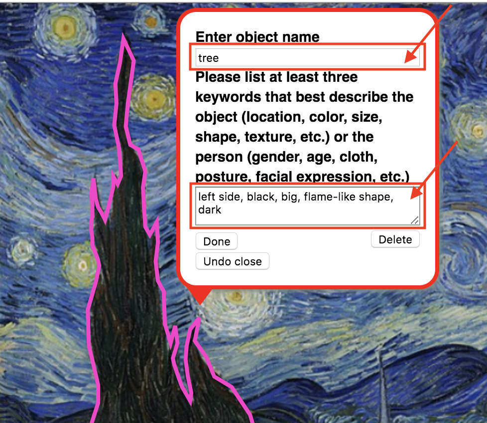
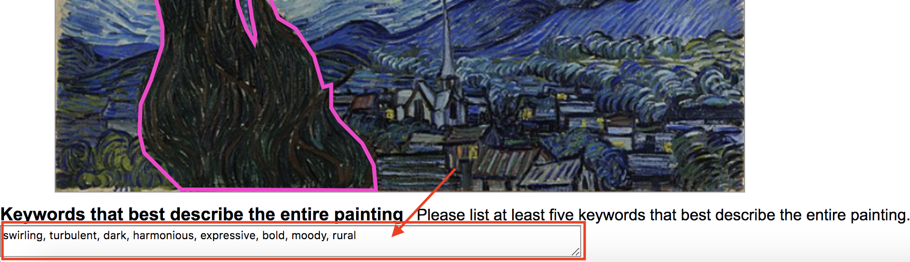

Artwork Image Annotation
Object Labeling and Image Description Task
Please read the instructions below and enter your Worker ID to get started! :)
Instructions
For each object:
Step 1. Draw a shape around the object.
● Follow the boundary of the object it contains with clicks.
○ A straight line will show up connecting two successive clicked points.
○ Connect the last click point with the first one to complete a shape.
○ *Examples:
□ Good example
□ Bad example
Step 2. Enter object name and visual description of the object.
● Enter object name.
● Enter a visual description of the object.
○ Please list at least three adjectives that best describe the object (location, color, shape, texture, etc.)
● Press the “Done” button
● Enter visual description of the object.
○ *Examples:
□ Good example

□ Bad example
Step 3. Choose the next object of your choice and go to Step 1
● Repeat this for at least 5 objects.
● Bonuses will be awarded for completing the task with the highest number of objects.
Step 4. Enter visual description of the entire painting after completing the labeling task.
● Please list at least five adjectives that best describe the entire painting
□ Good example

Step 5. Press “submit HIT” button to get your survey code
● You can enter this code to mTurk survey page to claim your reward.
□ Completed example
Now, before you start your hit, enter your Worker ID below.